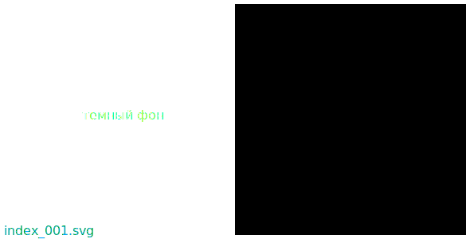
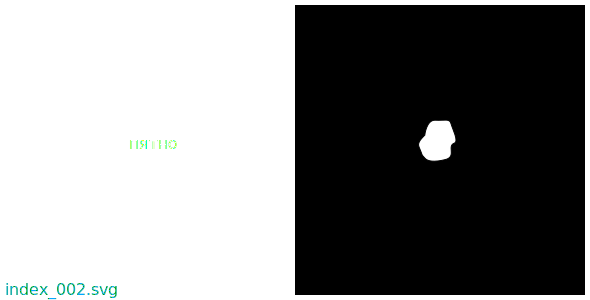
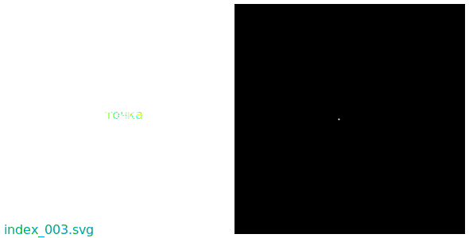

Возможность - первична!
Возможность -
состояние вселеной предлагает выбрать один из вариантов:
- изменить состояние вселеной до предлагаемого состояния
- не изменять состояние вселеной
который совершится с вероятностью 1(100%).
Полезно различать "возможность изменить" и "возможность попробовать изменить".
Состояние -
энергия внутри
пустоты в определеный момент времени.
Вселеная - вся
энергия и
пустота.
Желание -
информация,
наблюдение которой
полезно для
хозяина желания.
Контроль -
изменение по
желанию.
Контролируемая возможность - состояние вселеной, в котором для
желаемого изменения, достаточно и обязательно сознательное увереное
желание.
Польза - увеличение
контролируемой энергии.
Полезный - увеличивающий
контролируемую энергию.
РАСПОЛЕОС -
РАзумная Структура ПОЛЕзная Окружающим Структурам.
Пользование -
разумная структура изменяет неразумную структуру и создает
пользу.
Использование -
разумная структура изменяет неразумную структуру и создает
контроль.
НЕСПОЛЕОС -
НЕразумная Структура ПОЛЕзная Окружающим Структурам.
Вред - неувеличение
контролируемой энергии.
Вредоносный - неувеличивающий
контролируемую энергию.
Вредитель -
разумная структура вредоносная для окружающих структур.
Вредительство -
действие разумной структуры или
хозяйства вредоносное для
окружающих структур.
Мусор -
неразумная структура вредоносная для окружающих структур.
Действие - часть
изменения - изменение.
Необязательное - от которого не
зависит контроль.
Обязательное - от которого
зависит контроль.
Совершать или не совершать полезные или вредоносные изменения, возможно без необязательных действий.
Наблюдаемое -
возможно заметить(унюхать, услышать, увидеть, обжечься, уколоться, блевануть, споткнуться, и т.п., в том числе и во сне) и после этого запомнить.
Изменение - появление
отличий в состоянии вселеной. Например при сравнении двух моментов времени, и/или двух положений в пространстве.
Изменение -
обязательное действие для
наблюдения. Слух перестает замечать долгий неизменяющийся звук. Глаза находящиеся годами в темноте, при быстром выходе на свет слепнут. Глаза находящиеся длительное время под действием только белого света(например на северном полюсе где вокруг снег) слепнут, иногда времено. При погружении в постояную неопасную температуру, через некоторое время, кожа перестает ощущать избыток или недостаток тепла. Неизменяющийся долгое время запах становится незаметным. И так далее...
Удовольствие - раслабленое
полезное изменение.
Отвращение - напряженое
вредоносное изменение.
Приятное - дает
удовольствие.
Противное - дает
отвращение.
Удобство - раслабленый
контроль.
Информация -
наблюдаемое изменение.
Память -
структура дающая возможность хранить
образ наблюдаемого изменения, чтобы повторно наблюдать этот образ в другое время.
Образ -
информация наблюдаемая разумом.
Опыт -
образ внутри
памяти полезный или уменьшивший
вред больше двух раз.
Один раз - случайность. Два раза - повторяемость. Три раза - последовательность(можно построить кривую из трех точек во времени, вывести математическое описание и совершать математические действия).
Знание -
образ дающий
возможность.
Инструмент - неразумная
структура дающая
возможность.
Помощь -
подарок от которого
зависит возможность другого хозяина.
Потребность -
изменение без которого нет
удобства.
Зависимость -
изменение без которого нет
возможности.
Постараюсь показать
информацию удобной.
У меня мало знаний. В представленой на этом сайте информации мало знаний. Кто ищет знания, называемые "передовые технологии", может потратить время без пользы.
Закрой глаза. Через несколько секунд многие оставшиеся от расматривания контрастных источников пятна начнут сливаться с темным фоном. Попробуй представить самую простую картинку какую только возможно. Обычно это пустой темный фон, пятно, или точка.



Площадь поверхности часть
образа из картинок.
Удобно наблюдать информацию разумом,
наблюдая площадь поверхности и цвет заметный на фоне.
Удобно удалить
вред образа и хранить образ в
памяти, для
опыта.